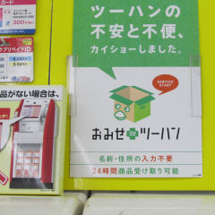
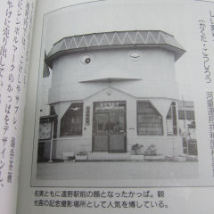
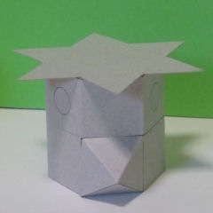
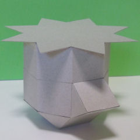

段ボール箱を
開いたところを
河童の顔に見立てて
図案化。

岩手県Ｔ野市駅前の交番。
函（はこ）、筥（はこ）、
匣（はこ）、筐（はこ）。
はこ、はこ、はこ、はこ。
建物というハコ。

The Kappa Hut α
で、上の二つの要素を
結合させたら
こんな感じです。
六角柱に
くちばしは四角錐、
皿と髪は六芒星。

斜方立方八面体の一部と
八角柱と、
正八角形の各辺に
正三角形が八個。
くちばしは、三角柱。
くちばしが
上下にパクパクと開いて
そこから入ります。
かっぱに
喰われてるみたいです。
大丈夫なのか？（笑）
パクパク、
パックリ、
パカパカッ、
パカットカッパハット。
カッパのラップ？
早口言葉？
こんな感じで
妄想的連想で発想。
芝棟（しばむね）っぽく
屋上テラスに
タンポポや
ニラや椿や
アサガオなんかを
植えたりするのもアリかも。
そして、キュウリも。（笑）
あれれっ！
でも、それって
「はなかっぱ」じゃんか。（笑）
参考文献
新版遠野物語
――付・遠野物語拾遺
柳田国男 編著
柳田国男と今和次郎
――災害に向き合う民俗学
畑中章宏 著
日本のかっぱ
――水と神のフォークロア
河童連邦共和国 監修